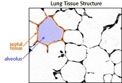

Environmental Tobacco Smoke and Lung Development Activity
Data collection
A microscopic image of lung tissue
|  | This is what lung tissue looks like under the microscope. You can see septa (orange) and alveoli (purple). Using a technique called point counting you can estimate components of three-dimensional structure from a two-dimensional slide. |
- Because of time constraints, you will analyze only 6 samples rather than 120.
- In a real-world experiment, a scientist would collect the counting data without knowing whether the slide is from a control or experimental animal. This helps to prevent unconscious bias from occurring.
How to measure septal tissue volume
To measure the amount of septal tissue, you will estimate septal tissue volume in each slide using a grid laid over the lung tissue image. You will measure septal tissue by counting each instance where a grid crosshair touches septal tissue. Here is a sample slide where the counts have been made for you:
Collecting your data
Now you are ready to collect and analyze a set of data on the effects of ETS. You will count a total of six slides, three from the experimental group and three from the control group. When you enter your counts on the computer screen, the computer will record your data for you.
To help us save your data for you as you are collecting it, please type your name (FIRST NAME only please, or use a "handle" of one word) in the box below. When you have finished typing your name, click ENTER NAME to begin.


The Biology Project
The University of Arizona
Tuesday, September 16, 1997
Contact the Development Team
http://biology.arizona.edu
All contents copyright © 1997. All rights reserved.